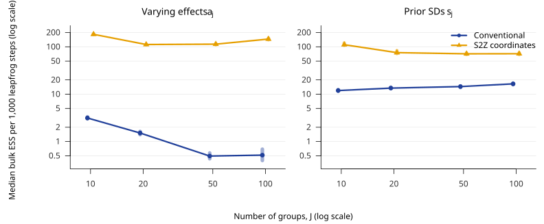
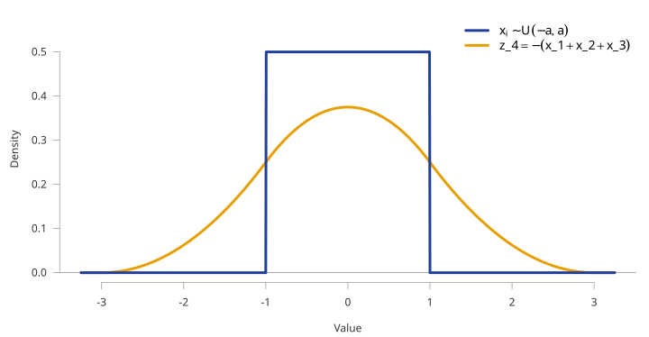
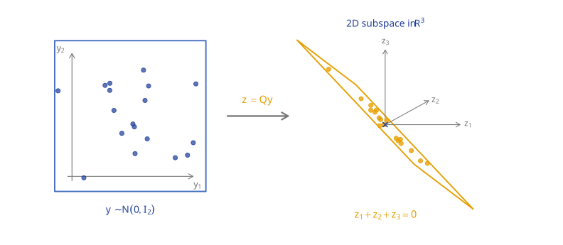
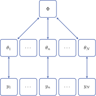
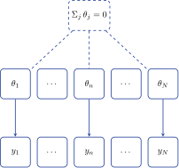
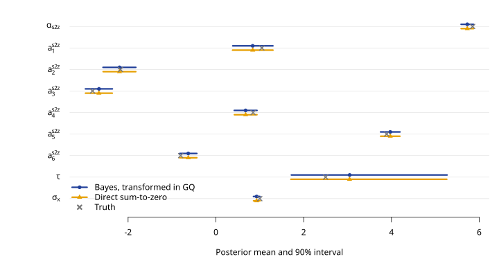
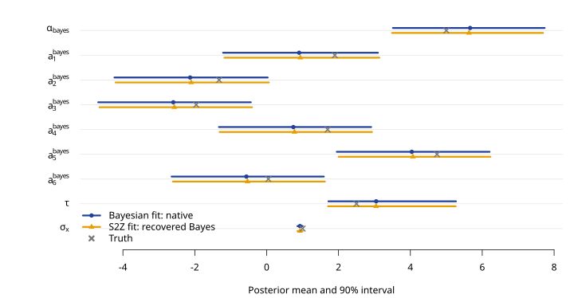
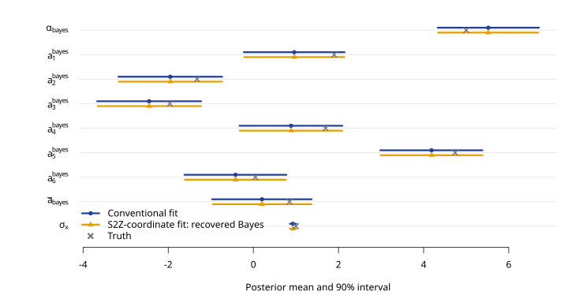

StanCon 2026
It’s simply \sum_j^n a_j = 0 To construct one might randomly draw i.i.d. n - 1 values y and
\begin{aligned} y_n & \overset{\text{set}}= -\sum_i^{n - 1} y_i \\ \boldsymbol{z} &= \left[ y_1 \; y_2 \; \ldots \; y_{n- 1} \; y_n\right] \\ & \sum_i^n z = 0 \end{aligned}
This works and is a valid construction. The problem is that it induces strong prior assumptions about the relationships across \boldsymbol{z}.
Since only z_n is a function of y the marginal density will be the density of the sum of z_{i:n - 1}. Most modelers would not want this!

The implicit prior on the last element is clearly different. Furthermore, the covariance of the final element is coupled strongly with the other elements.
We can balance the density across the values by using an orthonormal basis for the zero-sum subspace, QQ^\top=P_0=I_n-\frac1n\mathbf 1_n\mathbf 1_n^\top.

All the values are now isotropic and exchangeable.

Sharing of information happens
When the evidence or data for a parameter are

No population distribution \Phi
Groups are tied together only by a hard constraint
Let’s take a 2-level, varying slopes, varying intercept model with i units and j groups
Group-level (conditional): E(y_{ij} \mid X, j) = \alpha + a_j + X (\beta + b_j)
Population-level (marginal): E(y_{ij} \mid X) = \alpha + X \beta
when E(a_j) = E(b_j) = 0
The data inform the group coefficients \alpha_j and \beta_j whereas the population \alpha and \beta sit one level up.
Bayesian hierarchical model
\alpha and \beta are population parameters and the observed groups are draws from that population
a_j \sim \mathcal{N}(\alpha, \sigma_a), \quad b_j \sim \mathcal{N}(\beta, \sigma_b)
A benefit is that new groups may still be infered from the population distribution as any finite draw of J groups has
\bar{a} = \tfrac{1}{J}\textstyle\sum_j a_j \neq \alpha
Frequentist effects coding
No population to draw from — the J observed groups are the population
The “population” parameter is the finite-population grand mean
\alpha = \tfrac{1}{J}\textstyle\sum_j \left( \alpha + a_j \right) \iff \sum_j a_j = 0
Suppose we restrict to varying intercepts, x_i \sim \mathcal{N}(\alpha + a_j, \sigma_x):
Bayesian hierarchical model
a^{\text{bayes}}_j \sim \mathcal{N}(0, \sigma_a) \bar{a} =\frac{1}{J} \sum_j a^{\text{bayes}}_j \sim \mathcal{N}\left(0, \frac{\sigma_a^2}{J} \right)
Frequentist effects coding
\alpha = \tfrac{1}{J}\textstyle\sum_j \left( \alpha + a^{\text{s2z}}_j \right) \iff \sum_j a^{\text{s2z}}_j = 0
Take \begin{aligned} \alpha_{\text{s2z}} &\overset{\text{set}} = \alpha_{\text{bayes}} + \bar{a} \\ a_j^{\text{s2z}} &\overset{\text{set}} = a_j^{\text{bayes}} - \bar{a} \\ \sum a_j^{\text{s2z}} &= 0 \end{aligned}
Let’s simulate six deliberately unbalanced groups from x_i \sim \mathcal{N}(\alpha + a_{j[i]}, \sigma_x), \qquad a_j \sim \mathcal{N}(0, \tau^2), with
alpha = 5
tau = 2.5
sigma_x = 1
n_j = (8, 13, 21, 34, 55, 89)For this finite draw,
\frac{1}{J} \sum_j a^{\text{bayes}}_j = \bar a = 0.85, \qquad \alpha_{\mathrm{s2z}} = 5.85.
Sampling 10k iterations over 4 chains. The first Stan program samples unconstrained Bayesian varying effects; the second samples a sum_to_zero_vector directly.
Bayesian specification and conversion to sum-to-zero equivalent
data {
int<lower=1> N;
int<lower=2> J;
array[N] int<lower=1, upper=J> group;
vector[N] x;
real<lower=0> alpha_prior_sd;
}
parameters {
real alpha_bayes;
vector[J] a_bayes;
real<lower=0> tau;
real<lower=0> sigma_x;
}
model {
alpha_bayes ~ normal(0, alpha_prior_sd);
a_bayes ~ normal(0, tau);
tau ~ normal(0, 5);
sigma_x ~ normal(0, 2);
x ~ normal(alpha_bayes + a_bayes[group], sigma_x);
}
generated quantities {
real mean_a = mean(a_bayes);
real alpha_s2z_recovered = alpha_bayes + mean_a;
vector[J] a_s2z_recovered = a_bayes - mean_a;
}
Across \alpha_{\mathrm{s2z}} and the six a_j^{\mathrm{s2z}}, the largest posterior-mean difference is 0.002. Across every plotted parameter, the largest difference is 0.003: Monte Carlo error at the scale of the plot.
Established pieces
Missing connection
Prior derivations address a single batch of group effects, normal–normal hierarchical models, or hierarchical centering and sweeping. We have not found an explicit posterior equivalence between an induced-prior sum-to-zero parameterization and a Bayesian superpopulation model.
This work
Establishes that equivalence through stochastic reconstruction of the omitted common-shift directions, extending to
Given \tau, let v_{\bar{a}}=\tau^2/J and under the prior assumption that \alpha_{\mathrm{bayes}}\perp\bar a\mid\tau. Then
\begin{gathered} \alpha_{\mathrm{bayes}}\sim\mathcal N(0,s_\alpha^2), \qquad \bar a\mid\tau\sim\mathcal N(0, v_{\bar{a}}),\\[0.35em] \alpha_{\mathrm{s2z}}=\alpha_{\mathrm{bayes}}+\bar a \ \Longrightarrow\ \begin{cases} \operatorname{Var}(\alpha_{\mathrm{s2z}}\mid\tau)=s_\alpha^2 + v_{\bar{a}}, \\ \operatorname{Cov}(\bar a,\alpha_{\mathrm{s2z}}\mid\tau) = v_{\bar{a}}, \end{cases}\\[0.45em] \begin{pmatrix}\bar a \\ \alpha_{\mathrm{s2z}}\end{pmatrix}\Bigm|\tau \sim\mathcal N\!\left[ \begin{pmatrix}0\\0\end{pmatrix}, \begin{pmatrix}v_{\bar{a}} & v_{\bar{a}} \\ v_{\bar{a}} &s_\alpha^2 + v_{\bar{a}} \end{pmatrix} \right]. \end{gathered}
The conditional-normal formula therefore gives
\begin{gathered} \bar a\mid\alpha_{\mathrm{s2z}},\tau \sim\mathcal N\!\left(w\alpha_{\mathrm{s2z}},v_c\right),\\[0.35em] \underbrace{\frac{v_{\bar{a}}}{s_\alpha^2 + v_{\bar{a}}}}_{w}, \qquad \underbrace{v_{\bar{a}} - \frac{v_{\bar{a}}^2}{s_\alpha^2 + v_{\bar{a}}}}_{v_c}. \end{gathered}
For each sum-to-zero posterior draw, sample the missing realized mean and shift the coordinates:
\bar{a} \mid \alpha_{\mathrm{s2z}}, \tau \sim \mathcal N(w\alpha_{\mathrm{s2z}},v_c), \qquad \alpha_{\mathrm{bayes}} = \alpha_{\mathrm{s2z}} - \bar{a}, \qquad a_j^{\mathrm{bayes}} = a_j^{\mathrm{s2z}} + \bar{a},
where \mathcal N(\text{mean},\text{variance}) is used.
parameters {
real alpha_s2z; real<lower=0> tau, sigma_x;
sum_to_zero_vector[J] a_s2z;
}
model {
tau ~ normal(0, 5); sigma_x ~ normal(0, 2);
alpha_s2z ~ normal(0, hypot(alpha_prior_sd, tau / sqrt(J)));
a_s2z ~ normal(0, tau);
target += log(tau);
x ~ normal(alpha_s2z + a_s2z[group], sigma_x);
}
generated quantities {
real mean_a_bayes, alpha_bayes_recovered;
vector[J] a_bayes_recovered;
{
real var_mean_a = square(tau) / J;
real var_alpha = square(alpha_prior_sd);
real weight = var_mean_a / (var_alpha + var_mean_a);
real conditional_sd = sqrt(var_alpha * var_mean_a / (var_alpha + var_mean_a));
mean_a_bayes = normal_rng(weight * alpha_s2z, conditional_sd);
}
alpha_bayes_recovered = alpha_s2z - mean_a_bayes;
a_bayes_recovered = a_s2z + mean_a_bayes;
}
Across \alpha_{\text{bayes}} and the six a_j^{\text{bayes}}, the largest posterior-mean difference is 0.032. Across every plotted parameter, the largest difference is 0.032. The largest standardized gap is 1.6 combined Monte Carlo SEs.
| Parameter | Bayesian | Sum-to-zero | ||
|---|---|---|---|---|
| ESS | ESS/grad | ESS | ESS/grad | |
| α | 5,557 | 0.002 | 33,461 | 0.121 |
| a1 | 5,719 | 0.002 | 39,725 | 0.144 |
| a2 | 5,683 | 0.002 | 64,383 | 0.234 |
| a3 | 5,650 | 0.002 | 71,686 | 0.260 |
| a4 | 5,588 | 0.002 | 56,372 | 0.204 |
| a5 | 5,581 | 0.002 | 46,215 | 0.168 |
| a6 | 5,572 | 0.002 | 39,120 | 0.142 |
| τ | 11,574 | 0.004 | 57,662 | 0.209 |
| σx | 16,549 | 0.006 | 61,344 | 0.223 |
4 chains × 10,000 sampling iterations = 40,000 post-warmup draws, plus 4,000 warmup iterations per chain. Bulk ESS is pooled across chains. ESS/grad divides by the total post-warmup n_leapfrog__: Bayesian = 2,796,128; sum-to-zero = 275,672.
Super-population decomposition
\begin{aligned} \underbrace{\alpha_{\mathrm{s2z}}}_{\text{mean of varying }J\text{ groups}} &=\underbrace{\alpha_{\mathrm{bayes}}}_{\text{super-population mean}} + \underbrace{\frac{1}{J}\sum a^{\text{bayes}}_j}_{\bar{a}},\\ \bar{a} \mid\tau&\sim\mathcal N(0,\tau^2/J) \end{aligned}
For every draw from the induced-prior sum-to-zero fit, draw the missing common shift from the prior-implied conditional distribution. This restores the Bayesian super-population draw.
\begin{aligned} \bar{a} \mid\alpha_{\mathrm{s2z}},\tau &\sim\mathcal N(w\alpha_{\mathrm{s2z}},v_c),\\ \alpha_{\mathrm{Bayes}}^{\mathrm{rec}} &=\alpha_{\mathrm{s2z}} - \bar{a},\\ \mathbf a_{\mathrm{Bayes}}^{\mathrm{rec}} &=\mathbf a_{\mathrm{s2z}}+ \bar{a} \mathbf 1. \end{aligned}
The native Bayesian and sum-to-zero estimates are different. Equivalence is distributional and holds only after randomly augmenting the sum-to-zero draws.
(\alpha_{\mathrm{Bayes}}^{\mathrm{rec}}, \mathbf a_{\mathrm{Bayes}}^{\mathrm{rec}})\mid y \ \overset{d}{=}\ (\alpha_{\mathrm{Bayes}},\mathbf a_{\mathrm{Bayes}})\mid y,
Extends to varying prior standard deviations on the varying effects. Common in Bayesian models and we can derive similar logic.
The original model used one common prior SD \tau for every varying intercept. We now learn a separate prior SD s_j for each group:
a_j\mid\tau\sim\mathcal N(0,\tau^2) \qquad\Longrightarrow\qquad a_j\mid s_j\sim\mathcal N(0,s_j^2),\quad j=1,\ldots,J.
The J positive scales are partially pooled through a log-scale hierarchy:
\gamma\sim\mathcal N(\mu_\gamma,s_\gamma^2), \qquad b_j\mid\omega\sim\mathcal N(0,\omega^2), \qquad s_j=\exp(\gamma+b_j).
Here \exp(\gamma) is their shared geometric center and \omega is the new hyper-SD controlling how much the group log scales vary.
Apply the earlier sum-to-zero shift to the log-SD deviations:
\begin{gathered} \bar b=J^{-1}\sum_j b_j,\qquad b_j^{\mathrm{s2z}}=b_j-\bar b,\qquad \gamma_{\mathrm{s2z}}=\gamma+\bar b,\\ \log s_j=\gamma+b_j =\gamma_{\mathrm{s2z}}+b_j^{\mathrm{s2z}}. \end{gathered}
The statistical model uses the nonnegative hyper-SD \omega:
\gamma\sim\mathcal N(\mu_\gamma,s_\gamma^2), \qquad b_j\mid\omega\sim\mathcal N(0,\omega^2), \qquad \log s_j=\gamma+b_j.
\omega is the sampled magnitude, coded as the signed form \lambda_\omega to preserve continuity at zero.
\begin{gathered} \lambda_\omega\sim\mathcal N(0,0.25^2),\qquad \omega=|\lambda_\omega|,\\ z_j\sim\mathcal N(0,1),\qquad b_j=\lambda_\omega z_j. \end{gathered}
Because z_j is symmetric, \lambda_\omega=+\omega and \lambda_\omega=-\omega induce the same b_j\mid\omega\sim\mathcal N(0,\omega^2).
\sum_j z_j^{\mathrm{s2z}}=0, \qquad b_j^{\mathrm{s2z}}=\lambda_\omega z_j^{\mathrm{s2z}}, \qquad \gamma_{\mathrm{s2z}}=\gamma+\bar b.
The removed mean has variance \lambda_\omega^2/J=\omega^2/J, so
\boxed{ \operatorname{Var}(\gamma_{\mathrm{s2z}}\mid\lambda_\omega) =s_\gamma^2+\frac{\lambda_\omega^2}{J} =s_\gamma^2+\frac{\omega^2}{J} }.
Recovering the removed log-scale mean \bar b
Let v_b = \lambda_\omega^2/J=\omega^2/J and V = s_\gamma^2+v_b. Then
\bar b\mid\gamma_{\mathrm{s2z}},\lambda_\omega \sim\mathcal N\!\left( \frac{v_b}{V}(\gamma_{\mathrm{s2z}}-\mu_\gamma), \frac{s_\gamma^2v_b}{V} \right),
where the second argument is a variance. Using z_{\bar b}\sim\mathcal N(0,1), recover
\begin{aligned} \bar b &=\frac{v_b}{V}(\gamma_{\mathrm{s2z}}-\mu_\gamma) +\lambda_\omega \sqrt{\frac{s_\gamma^2}{JV}}\,z_{\bar b},\\ \gamma&=\gamma_{\mathrm{s2z}}-\bar b, \qquad b_j=b_j^{\mathrm{s2z}}+\bar b. \end{aligned}
Recovering the removed varying-effect mean m
Let m=\bar a_{\mathrm{bayes}}=J^{-1}\sum_j a_j^{\mathrm{bayes}} be the mean removed from the unconstrained Bayesian effects. Given s_\alpha, s_j, \alpha_{\mathrm{s2z}}, and a^{\mathrm{s2z}}, define
P=s_\alpha^{-2}+\sum_j s_j^{-2}, \qquad \widehat m=P^{-1}\!\left( \frac{\alpha_{\mathrm{s2z}}}{s_\alpha^2} -\sum_j\frac{a_j^{\mathrm{s2z}}}{s_j^2} \right).
Then m\mid\alpha_{\mathrm{s2z}},a^{\mathrm{s2z}},s_\alpha,\{s_j\} \sim\mathcal N(\widehat m,P^{-1}) and \alpha_{\mathrm{bayes}}=\alpha_{\mathrm{s2z}}-m, a_j^{\mathrm{bayes}}=a_j^{\mathrm{s2z}}+m.

The shared log scale has a \mathcal N(\log 2.5,0.5^2) prior, and \lambda_\omega \sim\operatorname{Normal}(0,0.25). Conditional on them, s_j=\exp(\gamma+b_j) with b_j\sim\mathcal N(0,\omega^2).
| Metric | Conventional | S2Z coordinates |
|---|---|---|
| Post-warmup leapfrog steps | 4,051,292 | 284,280 |
| Wall-clock fit time | 4.3 s | 0.7 s |
| Bulk ESS for α | 8,108 | 58,604 |
| Bulk ESS/grad for α | 0.00200 | 0.20615 |
Both fits had zero divergences and zero maximum-treedepth hits. Wall-clock time is CmdStanR’s total elapsed fit time for four parallel chains, including warmup and sampling but excluding compilation; it is machine-specific.
| Parameter | Conventional | S2Z coordinates | ||
|---|---|---|---|---|
| ESS | ESS/grad | ESS | ESS/grad | |
| α | 8,108 | 0.00200 | 58,604 | 0.20615 |
| aj (mean) | 8,264 | 0.00204 | 58,463 | 0.20565 |
| ā | 8,110 | 0.00200 | 58,919 | 0.20726 |
| σx | 39,248 | 0.00969 | 67,397 | 0.23708 |
| sα | 27,305 | 0.00674 | 60,411 | 0.21251 |
| sj (mean) | 25,778 | 0.00636 | 37,942 | 0.13347 |
| λω | 27,275 | 0.00673 | 50,933 | 0.17916 |
The a_j and s_j rows report means across the six group-specific parameters; their individual ESS and ESS/grad values had similar magnitudes. Matched Bayesian estimands use 40,000 post-warmup draws. ESS/grad divides by total post-warmup n_leapfrog__: conventional = 4,051,292; S2Z coordinates = 284,280. s_\alpha is the population-intercept prior SD, s_j is the prior SD of varying intercept a_j, and \omega is the SD of the group log-SD deviations.

This single nested benchmark extends the original \tau=2.5 simulation by repeating its six unbalanced group sizes through J=(10,20,50,100), yielding N=(296;\,681;\,1{,}781;\,3{,}596). Points show median ESS/grad across the matched group-specific estimands; bars show their IQR, not uncertainty intervals.
Bayesian hierarchical models allow estimating a ‘super-population’ but it’s not magic, it is a consequence of the distributional assumptions.
Sum-to-zero constraints are great and now you can get the Bayesian estimates with faster and more robust fitting.
Arguments here extend to elliptically symmetric distributions.
More details to come in the paper
Comparison diagnostics, Stan implementations, and Gaussian marginalization details
For each plotted parameter, calculate z= \frac{|\hat\mu_1-\hat\mu_2|} {\sqrt{\operatorname{MCSE}_1^2+ \operatorname{MCSE}_2^2}}.
| Fit comparison | Largest absolute posterior-mean difference | Largest standardized gap, z |
|---|---|---|
| Recovered S2Z vs native S2Z | 0.003 | 1.8 |
| Native Bayesian vs recovered Bayesian | 0.032 | 1.6 |
| Different variances: conventional vs recovered Bayesian | 0.008 | 0.5 |
Each entry is the maximum across the plotted parameters for that comparison; the two maxima need not occur for the same parameter. The largest standardized gap was 1.8 combined Monte Carlo SEs. For one standard-normal comparison, a gap at least this large occurs about 7% of the time; taking a maximum over several parameters makes it still less surprising.
}
transformed parameters {
real<lower=0> alpha_prior_sd = exp(gamma);
vector[J] b = lambda_omega * z_log_sd;
vector<lower=0>[J] a_prior_sd = exp(gamma + b);
}
model {
gamma ~ normal(mu_gamma, s_gamma);
z_log_sd ~ std_normal();
lambda_omega ~ normal(0, 0.25);
alpha_bayes ~ normal(0, alpha_prior_sd);
a_bayes ~ normal(0, a_prior_sd);
sigma_x ~ normal(0, 2);
x ~ normal(alpha_bayes + a_bayes[group], sigma_x);
}
generated quantities {
real mean_a = mean(a_bayes);
real alpha_s2z_recovered = alpha_bayes + mean_a;
vector[J] a_s2z_recovered = a_bayes - mean_a;
}data {
int<lower=1> N;
int<lower=2> J;
array[N] int<lower=1, upper=J> group;
vector[N] x;
}
transformed data {
real mu_gamma = log(2.5);
real s_gamma = 0.5;
}
parameters {
real alpha_s2z;
sum_to_zero_vector[J] a_s2z;
real z_mean_a_cond;
real gamma_s2z;
sum_to_zero_vector[J] z_log_sd_s2z;
real z_mean_b_cond;
real lambda_omega;
real<lower=0> sigma_x;
}transformed parameters {
real var_gamma = square(s_gamma);
real var_mean_b = square(lambda_omega) / J;
real var_gamma_s2z = var_gamma + var_mean_b;
real mean_b_cond = var_mean_b / var_gamma_s2z
* (gamma_s2z - mu_gamma);
real mean_b = mean_b_cond + lambda_omega
* sqrt(var_gamma / (J * var_gamma_s2z))
* z_mean_b_cond;
real gamma_recovered = gamma_s2z - mean_b;
real<lower=0> alpha_prior_sd_recovered =
exp(gamma_recovered);
vector[J] b_s2z = lambda_omega * z_log_sd_s2z;
vector[J] b_recovered = b_s2z + mean_b;
vector<lower=0>[J] a_prior_sd =
exp(gamma_s2z + b_s2z);
vector[J] inv_var_a = inv(square(a_prior_sd)); real inv_var_alpha =
inv(square(alpha_prior_sd_recovered));
real precision_mean_a = inv_var_alpha + sum(inv_var_a);
real mean_a_cond = (alpha_s2z * inv_var_alpha
- dot_product(a_s2z, inv_var_a)) / precision_mean_a;
real sd_mean_a_cond = inv_sqrt(precision_mean_a);
real mean_a_bayes = mean_a_cond + sd_mean_a_cond * z_mean_a_cond;
real alpha_bayes_recovered = alpha_s2z - mean_a_bayes;
vector[J] a_bayes_recovered = a_s2z + mean_a_bayes;
}
model {model {
gamma_s2z ~ normal(mu_gamma, sqrt(var_gamma_s2z));
z_log_sd_s2z ~ std_normal();
z_mean_b_cond ~ std_normal();
lambda_omega ~ normal(0, 0.25);
alpha_s2z - mean_a_cond ~ normal(0, alpha_prior_sd_recovered);
a_s2z + mean_a_cond ~ normal(0, a_prior_sd);
target += 0.5 * log(2 * pi()) - 0.5 * log(precision_mean_a);
z_mean_a_cond ~ std_normal();
sigma_x ~ normal(0, 2);
x ~ normal(alpha_s2z + a_s2z[group], sigma_x);
}For fixed s_\alpha, \{s_j\}, \alpha_{\mathrm{s2z}}, and a^{\mathrm{s2z}}, write
\ell(m)= \log\mathcal N(\alpha_{\mathrm{s2z}}-m\mid0,s_\alpha^2) +\sum_{j=1}^J \log\mathcal N(a_j^{\mathrm{s2z}}+m\mid0,s_j^2).
With P and \widehat m from the main presentation, completing the square gives
\ell(m)=\ell(\widehat m)-\frac{P}{2}(m-\widehat m)^2.
This immediately gives m\mid\alpha_{\mathrm{s2z}},a^{\mathrm{s2z}},s_\alpha,\{s_j\} \sim\mathcal N(\widehat m,P^{-1}).
From the completed square, \ell(m)=\ell(\widehat m)-\tfrac12P(m-\widehat m)^2. Therefore, marginalizing the removed direction contributes
\begin{aligned} \log\!\int_{-\infty}^{\infty}e^{\ell(m)}\,dm &=\ell(\widehat m)+ \log\!\int_{-\infty}^{\infty} e^{-\frac{P}{2}(m-\widehat m)^2}\,dm \\ &=\ell(\widehat m) +\frac12\log(2\pi)-\frac12\log P. \end{aligned}
\boxed{ \Delta\log p =\frac12\log(2\pi)-\frac12\log P }
Thus P={\tt precision\_mean\_a}. This is a Gaussian integration factor, not a Jacobian. The -\tfrac12\log P term must remain because P depends on the sampled scales; \tfrac12\log(2\pi) is constant and may be dropped. If m were sampled directly, this marginalization term would not be added.
We will restrict ourselves to elliptically symmetric distributions for hierarchical models, i.e., \begin{align*} &f(x) = c \, g(x^\top \Sigma_x^{-1}x), \\ &\int_{\mathbb{R}^d} f(x) \, dx = 1 \end{align*} where1
\begin{align*} &f(x) = c \, g(x^\top \Sigma_x^{-1}x), \\ &\int_{\mathbb{R}^d} f(x) \, dx = 1 \end{align*}
The choice of g controls the tail behavior, allowing both light- and heavy-tailed priors within the same family: